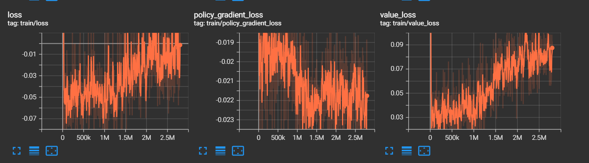
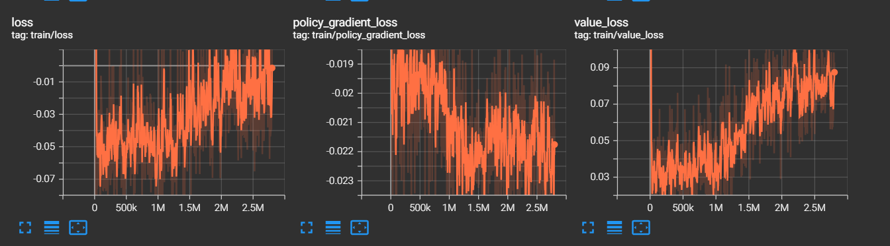

Expérimentation de
l'apprentissage par renforcement
Carte du terrain de rocket league
Classement de bots communautaires

Interprétation des résultats du TensorBoard
Le TensorBoard vous permet de récolter des données relatives à votre simulation permettant ainsi d'améliorer les analyses et interprétations des résultats. Voici plusieurs données ainsi que leur signification:
rollout/ep_len_mean
C'est la longueur moyenne de chaque épisode d'apprentissage. Cela indique la durée moyenne de chaque épisode d'interaction de l'agent avec l'environnement.
rollout/ep_rew_mean
C'est la récompense moyenne par épisode. Il représente la moyenne des récompenses obtenues par l'agent au cours de chaque épisode.
fps
C'est le nombre de frames par seconde (images par seconde) que l'algorithme peut traiter pendant l'entraînement. Cela indique la vitesse à laquelle l'algorithme génère des données et met à jour les paramètres du modèle.
time/iterations
C'est le nombre d'itérations (ou pas de temps) que l'algorithme a effectuées jusqu'à présent pendant l'entraînement.
time/time_elapsed
C'est le temps écoulé depuis le début de l'entraînement, mesuré en secondes ou en minutes.
time/total_timesteps
C'est le nombre total d'étapes (ou pas de temps) que l'algorithme a effectuées depuis le début de l'entraînement.
train/approx_kl
Il s'agit de la divergence KL (Kullback-Leibler) approximative entre les nouvelles et anciennes politiques. Cela mesure à quel point la nouvelle politique diffère de l'ancienne politique.
train/clip_fraction
C'est la fraction d'échantillons qui ont été tronqués lors de l'optimisation. Cela mesure à quel point les gradients ont été tronqués pour respecter la contrainte de clip lors de la mise à jour de la politique.
train/clip_range
C'est la plage de clip utilisée pour la mise à jour de la politique. C'est la valeur maximale de changement autorisée pour les paramètres de la politique.
train/entropy_loss
C'est la perte d'entropie, qui mesure l'incertitude de la politique. Une politique plus incertaine a une entropie plus élevée.
train/explained_variance
C'est la variance expliquée par le modèle par rapport aux données observées. Cela mesure à quel point les prédictions du modèle correspondent aux récompenses réelles.
train/learning_rate
C'est le taux d'apprentissage utilisé par l'algorithme d'optimisation pour mettre à jour les paramètres du modèle.
train/loss
C'est la perte totale de l'algorithme. Cela mesure à quel point les prédictions du modèle diffèrent des récompenses réelles.
train/n_updates
C'est le nombre total de mises à jour des paramètres du modèle effectuées jusqu'à présent pendant l'entraînement.
train/policy_gradient_loss
C'est la perte de gradient de politique, qui mesure à quel point la politique actuelle est éloignée de la politique optimale.
train/value_loss
C'est la perte de valeur, qui mesure à quel point les valeurs prédites par le modèle correspondent aux valeurs réelles.
Resultat de la première semaine
Les premiers jours du projet ont été essentiellement consacré à l'installation et la mise en place des différents modules necessaires
et à la compréhension de l'architecture général du projet. Le compte rendu de ces phases vous est présenté dans les onglets Setup
et Architecture, si vous souhaitez vous lancer dans la conception d'un bot rocket league, nous vous conseillons de vous
informer au préalable sur ces structures et la manière dont elles fonctionnent.
La politique et le réseau de neuronne utilisés pendant la première semaine fut celle et celui de base proposé par stable baselines 3.
Il faut savoir que les réseaux SB3(=stable baselines 3) sont séparés en deux parties principales:
Premièrement un extracteur de caractéristiques qui a pour objectif d'extraire des caractéristiques à partir d'observations de grande dimension,
deuxièmement, d'un réseau entièrement connecté mappant les fonctionnalités aux actions & valeurs. Pour résumé, toutes les observations
sont récoltées puis prétraitées (exemple: les obs discrets sont convertis en vecteurs uniques) avant d'être
transmises à l'extracteur de caractéristiques. Dans le cas d'observations vectorielles, l'extracteur de caractéristiques n'est qu'une "Flatten" couche.
De plus, le terme "Politique" fait référence à la classe qui gère tous les réseaux utiles à la formation et donc pas seulement le réseau utilisé pour prédire les actions.
Pour plus de précisions, je vous renvoie à la source dont ont été extraites ces informations: Policy Networks.
Lors de nos tous premiers tests, nous avons pris la décision d'observer la réaction de l'agent si ce dernier n'était soumis qu'à une seule
et même fonction de récompense qui se traduisait finalement par une pénalité si l'agent était dans les airs.
Après simplement 15 à 30 minutes d'entrainement, nous nous sommes aperçus que l'agent ne sautait plus et conservait ses quatres roues collées au sol. En
effet, il se contentait à présent de simplement rouler de manière aléatoire dans le terrain.
Cela nous a conforté dans l'idée que malgré une structure de réseau de neuronne assez basique, l'agent pouvait tout de même apprendre et s'améliorer.
Touché de balle
Notre premier objectif fut de tenter d'apprendre à l'agent de toucher la balle, afin de vous donner une idée de notre attribution de coefficient
selon les fonctions dé récompenses:
1.45 , # GoalScoredReward
0.1 , # BoostDifferenceReward
1 , # BallTouchReward
0.3 , # DemoReward
0.0025 , # DistancePlayerBallReward
0.0025 , # DistanceBallGoalReward
0.000625, # FacingBallReward
0.0025 , # AlignBallGoalReward
0.00125 , # ClosestToBallReward
0.00125 , # TouchedLastReward
0.00125 , # BehindBallReward
0.00125 , # VelocityPlayerBallReward
#0.0025 , # KickoffReward (0.1)
#0.0025 , # KickoffReward (0.1)
0.0025 , # VelocityReward (0.000625)
0.00125 , # BoostAmountReward
0.0015 , # ForwardVelocityReward
3 , # FirstTouchReward
#5 # AirPenalityReward
Après plusieurs heures d'entrainement, nous avons pu constater une réaction innatendu de l'agent (voir exemple ci-dessous):
Nous pouvons observer que l'agent se rapproche difficilement de la balle mais sans jamais toucher cette dernière.
Après réflexion et l'analyse du gain de récompense qu'obtenait le bot pendant son entrainement, nous nous sommes
aperçut qu'il avait jugé plus rentable de se rapprocher de la balle afin de toucher la récompense de "DistancePlayerBallReward",
plutôt que de directement toucher cette dernière.
C'est ainsi que nous avons pris conscience de la difficulté et de la justesse dont il faut faire preuve lorsque nous associons
un coefficient à une fonction de récompense. C'est aussi la raison pour laquelle il faut observer attentivement l'évolution
de comportement de l'agent pendant son entrainement au risque de l'entrainer en vain pendant une longue durée.
Par conséquent, nous avons opter pour un changement dans les coefficients attribués aux fonctions de récompenses.
En effet, nous avons drastiquement augmenté le gain correspondant au touché de balle afin que cet action devienne plus rentable
que la distance de l'agent par rapport à la balle.
10 , # GoalScoredReward
0.000000 , # BoostDifferenceReward
3 , # BallTouchReward
#0.3 , # DemoReward
0.000000 , # DemoReward
0.05 , # DistancePlayerBallReward
#0.0025 , # DistanceBallGoalReward
0.000000 , # DistanceBallGoalReward
0.001, # FacingBallReward
0.0025 , # AlignBallGoalReward
0.00125 , # ClosestToBallReward
#0.00125 , # TouchedLastReward
#0.00125 , # BehindBallReward
#0.00125 , # VelocityPlayerBallReward
#0.0025 , # KickoffReward (0.1)
#0.05 , # VelocityReward (0.000625)
#0.00125 , # BoostAmountReward
#0.005 , # ForwardVelocityReward
0.000000 , # TouchedLastReward
0.000000 , # BehindBallReward
0.000000 , # VelocityPlayerBallReward
0.000000 , # KickoffReward (0.1)
0.000000 , # VelocityReward (0.000625)
0.000000 , # BoostAmountReward
0.000000 , # ForwardVelocityReward
3 , # FirstTouchReward
1 , # DontTouchPenalityReward
#5 # AirPenality
Ensuite, après de nombreuse heure d'entrainement sur des états initiaux de kickoff, l'agent était en capacité de toucher la balle à chaque
simulation. Nous avons donc pris la décision d'étendre le nombre d'états initiaux en créant la situation suivante: Les deux agents sont situés
dans leur camp avec comme orientation le but adverse. La balle quant à elle, est positionné au centre du terrain, selon l'axe X et non l'axe Y.
Ce qui a pour objectif d'observer les réactions de l'agent sur des situations autres qu'un kickoff. Nous appelerons cette situations "LineState".

En conséquence, nous avons pu remarquer que nous avions mal interprété le résultat de la simulation. Effectivement, nous
pensions initialement que l'agent avait appris à toucher la balle. En réalité, ce dernier avait juste compris qu'en avançant tout droit,
de temps en temps, il gagnait plus de points. Etant donné qu'un kickoff a tendance à favoriser le fait que la balle se trouve devant le bot,
il n'avait effectivement qu'à aller tout droit de manière à percuter la balle.
Ainsi l'entrainement n'avait servi à rien, le bot ayant adopté un comportement que nous ne voulions pas. Nous avons donc récupéré un modèle de base
sans aucun entrainement au préalable avec des coefficients similaires et pour comme seul état initial, le "LineState".
Puis, à la suite d'une nuit entière d'entrainement, nous avons obtenu des résultats beaucoup plus significatifs. En effet, l'agent réussissait dans la
quasi-totalité des cas à toucher la balle.

 

Selon les résultats-ci dessus, nous pouvons observer que le temps moyen d'une simulation augmente, cela signifie si on en croit les conditions d'arrêt
que le bot touche de plus en plus vite la balle. En effet, la simulation s'arrête en seulement 50 ticks dans le cas où l'agent ne toucherait pas la balle,
contre 2000 s'il la touche. En sachant que plus une simulation est prolongée, plus l'agent gagne de points car certaines récompenses fournissent des points à chaque
tick comme la DistanceBallGoalReward qui donne plus ou moins de récompenses en fonction de la distance qui sépare l'agent de la balle.
Ensuite, la récompense moyenne obtenu en fonction au fur et à mesure des épisodes augmente elle aussi, ce qui signifie que l'agent
effectue de plus en plus de tâche qui lui rapporte des récompenses.
En constate aussi une hausse de la perte d'entropie, par conséquent l'entropie est plus faible et cela sous-entend une politique plus certaine.
C'est à dire que l'agent effectue de moins en moins d'actions aléatoires.
Cependant on remarque aussi une baisse de la variance expliquée,
une valeur faible indique que le modèle ne parvient pas à capturer la structure des données et que ses prédictions ne sont pas fiables. Cela est en correlation
avec la hausse de la perte de valeur et un baisse de la perte du gradient.
Ces résultats sont peu compréhensibles à en constater l'obtention d'un gain plus élevé de récompense...
Nous avons poursuivi notre étude en positionnant l'agent en situation réelle d'un match afin d'anlyser son comportement.
Le résultat résiliant de ce test fut que l'agent, lorsque ce dernier se situe du bon côté de la balle. C'est à dire entre la balle et son propre but,
il n'éprouvait que peu de difficulté à toucher la balle. En revanche, si l'agent se situait entre la balle et le but adverse, son comportement
devenait comme aléatoire sans aucun mouvement de concret.
Nous pouvons ainsi constater que l'agent peut être réactif voir très réactif dans certaines situation qui lui ont été familiaire pendant son entrainement,
cependant, lorsqu'une situation lui est inconnu, les mouvements de l'agent deviennent totalement aléatoire et son comportement perds de son sens.
Afin de palier à ce problème, nous avons mis en place un nouvel état initial que nous nommerons "InvertedStateOrange" ou "InvertedState", ces états ont pour effet
de mettre l'agent dans une situation plus complexe. Effectivement, l'un le bot est toujours orienté vers le but adverse en revanche il se situe entre
le but adverse et la balle. Pour l'autre, l'agent est situé comme à son habitude entre la balle et son but. Cependant, il est orienté vers son propre but. Ces deux états initiaux
ont pour objectif de complexifier et de diversifier des situations pouvant avoir lieux pendant un match de sorte à ce que les mouvements de l'agent, peu importe qu'il soit du bon ou du côté de
la balle, ne soit plus aléatoire.

A la suite de l'entrainement, nous avons de nouveau constaté un problème. Bien que le bot réussissait à présent, malgré son placement du mauvais côté, à se diriger vers la balle et à la toucher certaines fois.
Ce dernier frappait la balle dans le sens inverse du jeu et parvenait même à marquer des buts contre son camp faussant ainsi l'entrainement. En effet, il faut savoir que le gain obtenu lorsque l'agent marque un but
est supérieur à l'ensemble des autres récompenses. De plus, étant donné que pour chaque entrainement le bot joue contre lui même, les fonctions de récompenses et les données récoltées ainsi que l'analyse de ces dernières
prennent en compte aussi le bot adverse. Par conséquent, si un des agents marques contre son camp, il est possible que des actions effectuées par le bot qui n'a pas marqué soit valorisé
alors que ces dernières n'auront aucun sens étant donné qu'il s'agit simplement d'un but marqué par le bot adverse et non pas un but marqué par la réussite d'une suite d'actions réalisées par
l'agent en question.
Cela a engendré la création d'une pénalité ayant comme fonction de retirer des points à l'agent s'il se situe du mauvais côté de la balle.
Résultat deuxième semaine
Ajout de statistiques
Résultat troisième semaine
A la suite du changement de la structure du réseau de neuronne de notre modèle, nous avons décidé de réitéré les expériences
exercées lors de la première semaine en ayant d'une part un nombre de données récoltées plus important, et d'autres parts,
en ne reproduisant pas les erreurs commisent par le passé.
Pour s'assurer que le bot se concentre d'avantage sur le fait de marquer nous avons conçu un nouvel état initial nommé openGoal
qui devrait favorisé les situations où l'agent a la possibilité de marquer pendant un match.
Sur l'image si dessus, l'agent bleu apparaît dans la zone bleu, pareillement pour le orange mais dans la zone rouge, tandis que la balle apparaît dans la zone rose. Par conséquent l'agent bleu aura plus tendance à apparaître derrière une balle positionné proche du but adverse avec un adversaire ayant une probabilité plus accrue d'apparaître derrière et donc de ne pas gêner un éventuel tir.
ZZeer_V.1
ZZeer_V.1 s'est entrainé essentiellement avec l'état initial LineState.
On constate une légère augmentation du gain de récompense moyenne en fonction du temps. L'approx_kl indique que la nouvelle politique se diffère de plus en plus de l'original. Ensuite, l'augmentation de la perte d'entropie souligne le fait que les choix du bot sont de moins en moins aléatoire. Concernant la variance expliqué, malgé une chute importante, nous pouvons observer qu'elle a tendance à remonter la pente au fils du temps.
ZZeer_V.2
ZZeer_V.2 a suivis un entrainement légèrement différent couplant des situations d'attaque et de défense afin qu'il apprenne ces caractéristiques de jeu. Tout en conservant des états initiaux plus basiques.
ZZeer_V.3
La version 3 de ZZeer a éré abandonné à la suite d'une erreur dans le code. En effet, il se trouve que la fonction de récompense GoalScoredReward avait un problème lors de ces simulations. En effet, la fonction renvoyait 0 quoiqu'il arrive. L'impacte de ce bug a eu comme effet le fait que l'agent malgré le fait qu'il avait appris à toucher la balle, n'avait absolument pas pris en compte l'intérêt de s'aligner avec le but et de marquer. La modification d'un comportement qui a été établi après de nombreuses heures d'entrainement s'avérant complexe, nous avons priviligié le fait de reprendre le modèle de ZZeer_V.2 et d'abandonner ZZeer_V.3.
ZZeer_V.4
Concernant la version 4 de ZZeer, nous avons opter pour un entrainement intensif à longue durée avec les états initiaux diversifiés, et des coefficients cohérents. Le temps dont dispose le bot pour chaque simulation a été volontairement réduis afin qu'il puisse s'entrainer sur des situations précises.
Après l'équivalent d'une semaine complète d'entrainement sans pause, nous avons obtenu les résultats suivants:
Dans l'ensemble des statistiques ci-dessus, on remarque que l'agent semble toucher de plus en plus de fois la balle, que son gain de récompense augmente en fonction du temps,
que sa politique actuelle a divergé drastiquement comparé à la politique antécédante et que la perte d'entropie augmente elle aussi. De plus, si on observe attentivement l'évolution des
des points rapportés par les fonctions de récompenses en fonction du temps, malgré le fait que nombreuses d'entre elles n'apporte pas d'informations concrètes, nous pouvons tout de même
remarquer que le bot a tendance à faire un peu plus d'arrêt, que son nombre de touche de balle a augmenté et que l'agent accentue l'action de s'aligner par rapport à la balle et le but adverse
qu'il se déplace plus rapidement vers la balle.
Effectivement, après une observation à temps réel, nous avons pu remarquer que le bot sait toucher la balle, il sait aussi la cadrer dans les cages ainsi que de faire demi-tour pour repasser du bon côté
de la balle. En revanche, nous avons détecté les problèmes suivant. Le premier et le plus impactant est que si la balle possède une vitesse plus ou moins élevé, l'agent éprouve une plus grande difficulté
à toucher la balle car ce dernier s'est entraîné sur des états initiaux où la balle était la majorité du temps immobile. De plus, l'agent se déplace plus lentement comme s'il souhaitait s'appliquer pour
tirer ou pour toucher la balle dans le bon sens tout en étant aligné au cages adverse. Or, le plus innatendu c'est qu'il a quasiment cessé de sauter. En effet, le fait d'effectuer un flick dans la balle
propulse cette dernière ce qui a pour effet de diminuer le gain obtenu grâce à la distance entre le joueur et la balle ainsi que le nombre de touches de balles se retrouve diminués car la balle s'éloigne de l'agent.
C'est assurément pour c'est raison que le bot a pris la décision de ne plus flip (sauter) mais de simplement pousser à vitesse lente la balle en avançant afin de maximiser le nombre de touches de balles et donc
un gain de récompense plus élevé.
L'erreur à ne pas reproduire serait d'effectuer un entrainement similaire avec des balles possédant une vitesse initiale afin que le bot prenne en compte la vitesse de la balle voir la hauteur dans son entrainement.